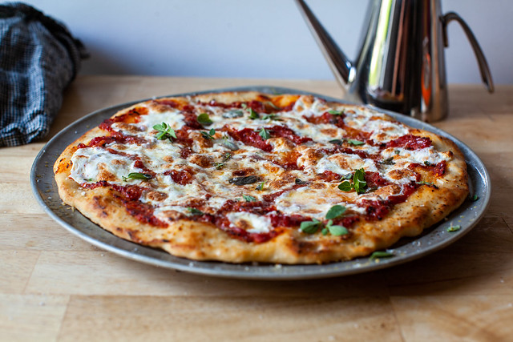

Easiest Pizza Dough Ever

The Lowdown
This is my absolute favourite method for making Pizza
With just FIVE ingredients you can become a pizza slinger in no time
Gather up the following ingredients, crank the tunes and crack a beer! This is the perfect start to your weekend!
This recipe will take about 5 mins prep and 2 hours to proof
The Ingredients
Makes about 4 small pizzas or 2 Lg
Double or even triple the recipe
- 1 1/2 cups (200 grams) flour
- 2 teaspoons kosher salt
- 3/4 teaspoon instant or active dry yeast
- 1/2 cup lukewarm water, plus 1 or 2 tablespoons more as needed
- 1 tablespoon (15 ml) olive oil
The Process
- Stir dry ingredients,including yeast together in a large bowl.
Add water and olive oil, stirring mixture into as close to a ball as you can.
- Dump all clumps and floury bits onto a lightly floured surface and knead everything into a homogeneous ball.
TIP:
If you are finding this step tricky, PAUSE!
Pick a song, crack a beer, feed your cat.
Leave the dough for 2-5 mins and then come back to it.
- Knead it for just a minute or two.
- Lightly oil the bowl and dump the dough in. Make sure all sides are covered with oil.
Cover with plastic wrap and leave untouched for an hour or two.
You are looking for the dough to double in size
- Dump it back on the floured counter (yup, I leave mine messy), and gently press the air out of the dough.
Fold the piece into a ball shape, and let it sit under that plastic wrap for 20minutes.
- Sprinkle pizza stone or baking sheet with cornmeal and preheat oven to 450C
- Roll out pizza (do the spin and toss special if you're daring) and decorate your pizza with whatever toppings you like
- Bake for about 10 mins
TIP:
Freeze Leftover Pizza for easy weekday meals
Pizza Sauce